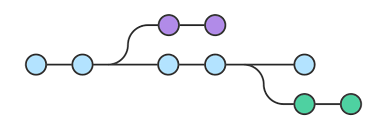

Home page

Gallery page
Сommand list
- git status: перечисляет все новые или изменённые
файлы, которые
нуждаются в сщхранении
- git add [файл]: добавляет файл в отслеживаемую зону
- git clone: скачивает репозиторий вместе со всей его
историей изменений
- git commit -m "[сообщение с описанием]": фиксирует
изменения и сохраняет их в историю версий
- git branch [имя ветки]: cоздаёт новую ветку
- git switch -c [имя ветки]: переключается на выбранную
ветку и обновляет рабочую директорию до её
состояния
- ggit merge [имя ветки]: вносит изменения указанной
ветки в текущую ветку
- git log: история коммитов для текущей ветки
- git push [ветка]: pагружает все изменения локальной
ветки в удалённый репозиторий